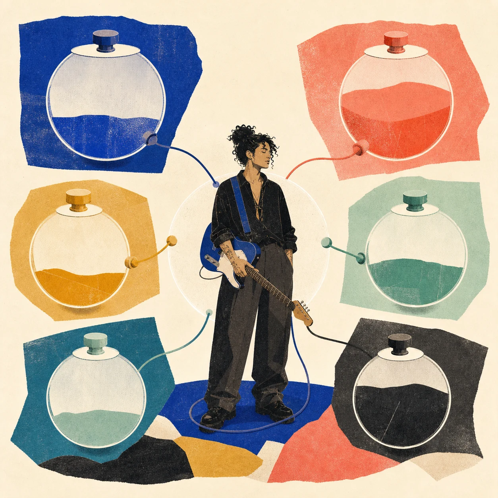
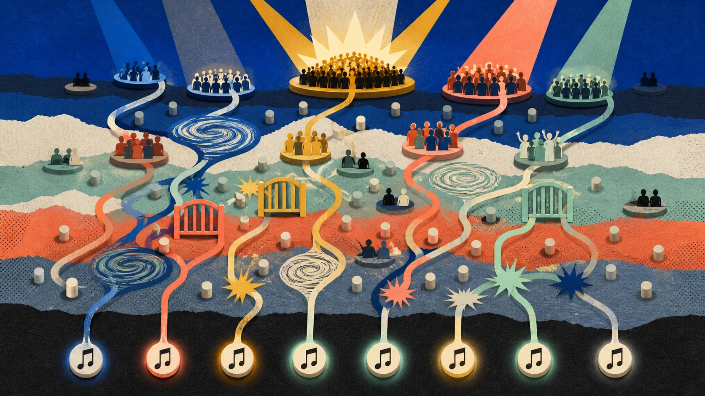
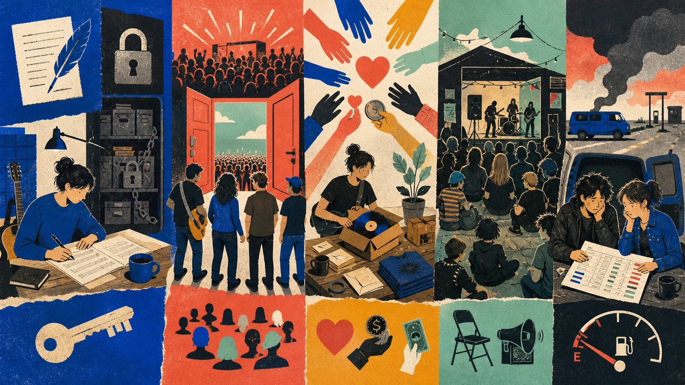
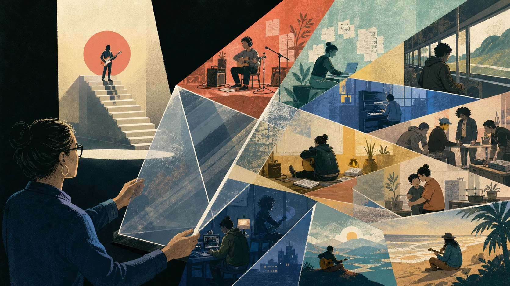

네 시간축
프로젝트는 이번 곡·공연, 경력은 다음 기회와 능력, 사업은 권리·현금·협상력, 삶은 건강·관계·의미를 봅니다.
01 · 먼저 한 문장
유명세 한 칸이 아니라 실력·청중·생계·통제권·지속성·삶의 질을 자신이 선택한 비율로 유지하고 갱신하는 능력입니다.
프로젝트는 이번 곡·공연, 경력은 다음 기회와 능력, 사업은 권리·현금·협상력, 삶은 건강·관계·의미를 봅니다.
우선순위 두 축만 고르는 것과 함께, 나머지 축에서 절대 깨지 않을 바닥을 정하세요. 예: 통증을 정상화하지 않기, 생활비를 빼서 광고하지 않기.

더 정교하고 고유한 작업을 반복해 만들 수 있나?
몇 명인가뿐 아니라 다시 오고 서로 응답하는가?
생활과 다음 작업을 감당할 현금이 남나?
무엇을 언제 누구와 만들고 누가 자산을 갖나?
유행이 바뀌어도 역할과 레퍼토리를 바꿀 수 있나?
몸, 마음, 돌봄, 동료와 양립하나?
02 · 히트 공식의 함정

14,341명이 낯선 곡을 선택한 인공 음악시장 실험에서 다른 사람의 선택을 볼 수 있을수록 성공은 더 불평등하고 예측하기 어려워졌습니다. 질은 영향을 줬지만 결과를 완전히 결정하지는 않았습니다. Salganik et al., 2006
작품이 약속한 경험을 실제로 주는가. 다시 시도할 능력의 기반입니다.
어떤 장면·사람·채널에서 발견됐는가. 좋은 작품도 만나기 전에는 선택되지 않습니다.
초기 선택이 추천·언론·협업을 불러 작은 차이가 커질 수 있습니다.
03 · 성공 시스템
| 모듈 | 할 일 | 흔한 병목 |
|---|---|---|
| 작품·레퍼토리 | 다시 듣고 공연할 가치 축적 | 한 곡만 완벽하고 다음 곡이 없음 |
| 청중 관계 | 누구의 어떤 장면과 연결되는지 학습 | 노출은 크지만 재방문·직접 관계가 없음 |
| 유통·타이밍 | 적절한 맥락에서 발견되게 함 | 모든 채널에 얕게 분산 |
| 팀·자본 | 혼자 못 푸는 병목에 자원 배치 | 반복 수요 전에 고정비 확대 |
| 권리·경제 | 가치가 생길 때 몫과 통제 보존 | 마스터·작곡·정산 구조를 모름 |
| 회복·갱신 | 실패와 피로 뒤 다시 작업 | 일정이 건강·관계·학습을 소진 |
04 · 다섯 사례, 다섯 메커니즘

작곡 권리와 원 마스터 소유가 달랐고, 계약상 가능해진 뒤 자신이 소유하는 새 녹음을 만들었습니다. 팬이 새 버전을 선택하도록 움직일 관계 자본이 전략을 시장 힘으로 바꿨습니다.
복제 한계: 세계적 수요, 제작비, 팀, 주요 작곡자 지위와 재녹음 가능 시점이 있었습니다. “모두 재녹음”이 아니라 서명 전 권리·제한·회복을 읽으라는 사례입니다. Harvard Law
In Rainbows의 구매자 선택 가격 선공개는 이후 고정가 상품과 함께 작동했습니다. 연구는 디지털 판매에 긍정적 변화가 있었지만 다른 밴드의 무료 공개는 같은 결과가 아니었다고 경고합니다.
복제 한계: 이미 세계적 카탈로그와 팬이 있었고 공식 전체 결제·비용 자료는 공개되지 않았습니다. Bourreau et al.
2012년 24,883명이 $1,192,793를 약정했습니다. 선주문과 여러 보상 단계는 수요·현금을 앞당겼지만 제작·배송·고객지원 의무도 함께 앞당겼습니다.
복제 한계: 약정 총액은 이익이 아니며 기존 팬 공동체가 있었습니다. 팬의 호의는 노동의 공정한 보상을 대신하지 않습니다. Kickstarter
자가 관리, Dischord 발매, 저렴한 음반·티켓, 전 연령 공연이 일관된 경험을 만들었습니다. 가격과 접근 정책 자체가 강한 신호였습니다.
복제 한계: DC 펑크 공동체, 자체 인프라와 내부 행정 노동이 있었습니다. 공식 자료는 모든 투어의 이익이나 개인 소득을 말하지 않습니다. Dischord
공개한 2014 투어 장부는 수입 $135,983, 비용 $147,802, 손실 $11,819였습니다. 붐비는 공연도 인원·교통·숙박·장비·제작비 뒤에는 손실일 수 있습니다.
복제 한계: 한 팀이 공개한 한 투어입니다. 장기 투자였다는 해석과 실제 후속 회수는 같은 사실이 아닙니다. 비판적 맥락
05 · 내 단계로 번역하기
완성 주기, 연습, 예산 상한, 계약 질문, 직접 연락처, 휴식.
협업, 공연 제안, 재방문, 언론·플레이리스트 제안.
알고리즘, 경쟁작, 경제상황, 바이럴과 타인의 최종 선택.
작게 자주 완성해 장르·역할·청중 가설을 시험합니다.
깊은 반응이 반복되는 몇 장면에 레퍼토리와 직접 관계를 모읍니다.
반복 수요와 마진이 보일 때 팀·광고·투어·재고를 늘립니다.
핵심을 활용하면서 실패해도 생존을 해치지 않는 새 옵션을 탐색합니다.
06 · 허영 지표 걷어내기
| 알고 싶은 것 | 헷갈리기 쉬운 숫자 | 더 가까운 증거 |
|---|---|---|
| 발견 | 총 노출 | 적합 청중의 완주·저장·다음 행동 |
| 관계 | 팔로어 | 재방문·답장·공연 재구매·동의 기반 연락 |
| 작품 수명 | 첫 주 재생 | 30·90일 뒤 재생·추천·레퍼토리 재사용 |
| 사업 | 총매출 | 기여이익·입금시점·반복구매·집중 위험 |
| 선택권 | 제안 개수 | 거절 가능한 현금·권리·대안 |
| 지속성 | 빽빽한 일정 | 회복·관계·다음 작업 의욕 |
07 · 사례 읽는 렌즈

08 · 한 장으로 끝내기
나는 ______한 음악과 경험을 ______에게 제공한다.
앞으로 12개월의 우선 성공축은 ______와 ______다.
다른 축의 최저 허용선은 ______다.
이번 분기에 통제 가능한 행동은 ______다.
손실 상한과 중단 기준은 ______다.
성공해도 지키지 않을 선택은 ______다.
90일 뒤 확인할 증거는 ______다.
좋은 정의는 야망을 줄이지 않습니다. 남의 점수판을 따라가느라 내 음악·권리·생계·삶을 동시에 잃지 않게 합니다.
근거의 범위
전체 인용·방법·사례 경계는 과학·산업 상세 문서에서 확인하세요. 생성 이미지의 원문 프롬프트는 PROMPTS.md에 있습니다.